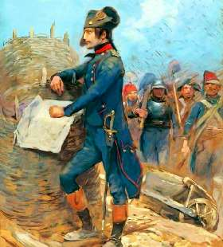

ТУЛОН, или ВЕРТИКАЛЬНЫЙ ВЗЛЕТ
День падения крепости Тулон, где в 1793 году засели французские роялисты и их английские союзники.
Батальные подробности малоинтересны, но само слово «Тулон» в истории стало нарицательным, обозначая стремительный взлет из ничтожности к величию.
Жил-был щуплый, полунищий капитанишка с иностранной фамилией и смешным выговором. По случайному стечению обстоятельств (ранили начальника) он стал командовать осадной артиллерией. И разработал такой стратегический план, что сильная крепость с 25-тысячным гарнизоном досталась победителям с минимальными потерями.
Капитана произвели прямо в генералы — в 24 года, и дальше он семимильными шагами устремился к вершинам
О «Тулоне» мечтает в 1 томе «Войны и мира» Андрей Болконский. Тогда, да и потом многим молодым честолюбцам не давала покоя эта волшебная сказка.
Я не считаю Наполеона героем. Он мне глубоко антипатичен, массовый убийца и мегаломаньяк. Но «Тулон» — это все равно прекрасно.
Желаю всем и каждому «Тулона». В любом деле, каким бы вы ни занимались. (Только в хорошем деле, пожалуйста).